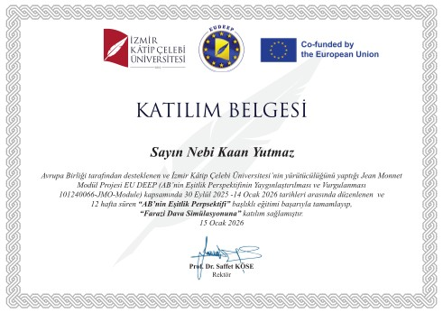

Jean Monnet Module – EU DEEP
İzmir Kâtip Çelebi Üniversitesi • Avrupa Birliği destekli program • 2026
Akademik programlar ve doğrulanabilir katılım belgeleri.

İzmir Kâtip Çelebi Üniversitesi • Avrupa Birliği destekli program • 2026
HONEYMUN, KALGÇ ve yeni akademik programlara ait belgeler edinildikçe bu alana eklenebilir.